DALE CARNEGIE · HOW TO WIN FRIENDS · PART THREE · CHAPTER 4 · PDF p147–154
A Drop of Honey
How you open a hard conversation decides how it ends. Start warm and the other person lowers their guard; start angry and they raise their fists before you have said anything useful.
Blowing up at someone feels great, for you. Carnegie asks what it does to the other person, and answers with Woodrow Wilson: come at people with clenched fists and theirs clench just as fast. The chapter then piles up proof that a friendly opening wins what force cannot: John D. Rockefeller Jr. calming miners who had wanted to hang him, a company president who bought baseball bats for his own strikers, a famous lawyer who opened his strongest arguments softly, and four ordinary class members who got a rent cut, avoided bad press, collected a damage claim and got a car fixed, all by beginning pleasantly. Aesop's fable of the sun and the wind sums it up: warmth gets the coat off; bluster makes people hold it tighter.
Principle 4 of Part Three
Begin in a friendly way.
How the chapter fits together
pdf p147–154 · read this first
Where it sits. This is the fourth of twelve chapters in Part Three, "How to Win People to Your Way of Thinking". The first three were mostly about what to stop doing in a disagreement: don't argue (Ch.10), never tell people they are wrong (Ch.11), and when you are wrong, say so quickly (Ch.12). This chapter is the first positive move: how to open. The next one, Ch.14 "The Secret of Socrates", picks up right where this leaves off: once the opening is friendly, get the other person saying "yes" early. The full list of Part Three's principles is gathered at the end of Ch.21.
The argument as a chain. Each row follows from the one before.
Problemventing feels good to you→it makes agreement harder for them
WhyWilson: fists double as fast as yours→sit down together → differences are few
Big proofRockefeller Jr., Colorado 1915→weeks of visits, a warm speech→strikers back at work
The rulea rankling heart ignores logic→led, not driven→Lincoln: honey before reason
Public lifeBlack's strikers clean the factoryWebster's soft openers to juries
Daily lifeStraub: rent cutWoodcock: no bad pressWinn: $2,000+ claim paidConnor: car fixed + loaner
Fablesun vs wind→Principle 4: begin in a friendly way
Limitsfriendly ≠ hiding the problem→every story still states the issue, after the warm start
About the title: it comes from the old saying Lincoln quoted, that a drop of honey catches more flies than a gallon of gall (gall = bitter bile). A little sweetness at the start does more than a lot of bitterness.
01 · THE OPENING QUESTION
Fists doubled: venting feels good, but whose pleasure is it?
pdf p147
Carnegie opens with an honest admission: when you are angry and finally tell someone exactly what you think, you enjoy it. Unloading your feelings is a real relief. Then he asks three questions that the rest of the chapter answers:
Does the other person share your enjoyment? (No. They are on the receiving end.)
Does your combative tone make it any easier for them to agree with you?
Does your hostile attitude make them want to come round to your side?
Wilson's answer. He calls on President Woodrow Wilson, who described the two ways to approach someone you disagree with:
Come with your fists clenched
The other person's fists clench just as quickly. You get a contest, and nobody listens.
Come and say "let's sit down and talk it through"
If you differ, work out why and exactly what the points of disagreement are. You usually find you are not far apart: the differences are few, the agreements many, and with patience, openness and a real wish to agree, you will agree.
"I think I can promise you that mine will double as fast as yours."Woodrow Wilson, quoted by Carnegie (pdf p147)
Picture it
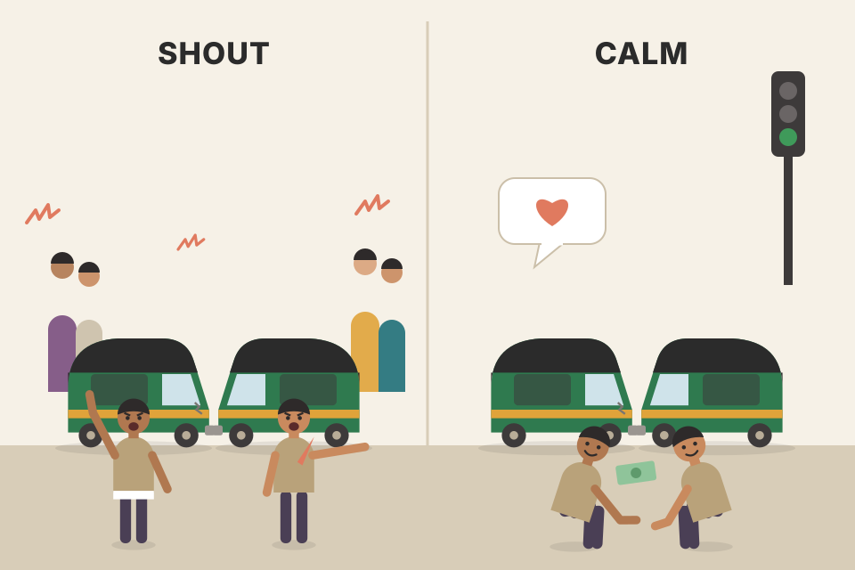
Two auto-rickshaws scrape each other at a Chennai signal. If one driver leaps out shouting, the other is out shouting in two seconds, and within a minute there is a crowd, honking, and nobody looking at the actual scratch. If the first driver walks over and says, "Anna, are you okay? Let's see how bad it is," they are both bent over the bumper together, and usually settle it in rupees and a shrug.
Where it breaks: on the road the damage is visible to both. In most work disagreements each side sees a different "scratch", so the calm opening is only step one; you still have to find out what the other person thinks the problem is (Wilson's "why it is that we differ").
What's happening behind it
The book's explanation: hostility is returned in kind. Your tone tells the other person this is a fight before your facts arrive, so they prepare to defend, not to consider. A friendly opening tells them it is a joint problem, and then the honest list of disagreements turns out to be short.
Beyond the book: psychologists call the mirror effect reciprocity (Alvin Gouldner, 1960; Robert Cialdini's Influence): people tend to return the kind of treatment they get, warmth for warmth and hostility for hostility. Marriage researcher John Gottman found that how a hard conversation starts (what he called a "harsh start-up" versus a soft one) predicts very well how it ends. In his studies, the first few minutes were enough to forecast the outcome of a fifteen-minute discussion most of the time.
At work
A PM pings you: "Why is the export feature still not done?" You can reply with the fists up ("Because it was never properly specced and you added three things last week") and you will both spend the thread defending yourselves. Or with Wilson's move: "Fair question, let's grab ten minutes. I think we see the scope differently and I want to find exactly where." The facts you would have thrown are still there; they just arrive in a meeting where they can be heard.
Interview angle. "Tell me about a disagreement with a product manager." A good answer shows that you de-escalated first (proposed a conversation, named the shared goal), then laid out the specific points of difference, and found that most of the plan was shared. That is Wilson's sequence in miniature.
Rockefeller Jr. and the Colorado miners: making friends out of people who wanted to hang him
pdf p147–149
Carnegie says nobody understood Wilson's point better than John D. Rockefeller Jr., and gives the hardest test case he can find.
Colorado · 1915Colorado Fuel and Iron Companya strike of about two yearstroops called instrikers shot dead
The situation. In 1915 Rockefeller was, in Carnegie's words, the most hated man in Colorado. One of the bloodiest strikes in American industrial history had shaken the state for two years. Angry miners were demanding higher pay from the Colorado Fuel and Iron Company, which Rockefeller controlled. Property had been wrecked, troops had been sent in, and strikers had been shot. Days earlier, Carnegie says, some of these men would gladly have strung Rockefeller up from a tree; yet he spoke to them as graciously as if they were a gathering of medical missionaries.
What he wanted. Not just peace: he wanted to bring the strikers round to his way of seeing things, at a moment when the air was full of hatred.
The move, part 1: weeks of groundwork. Before he gave any speech, he spent weeks making friends. He visited every camp in the southern coal field, talked one by one with nearly all the miners' representatives, went into their homes and met their wives and children.
The move, part 2: the speech. Only then did he address the strikers' representatives, together with the company's officers. His opening is full of warmth: he called it a red-letter day in his life, said he was proud to be there and would remember the meeting as long as he lived, and pointed out that two weeks earlier he would have stood before them as a stranger, but after visiting their camps and families they now met as friends, to discuss their common interests. He even said he was there only by their courtesy, since he was neither an officer nor an employee, though he felt closely tied to them as the representative of the stockholders and directors.
"We meet here not as strangers, but as friends."Rockefeller to the miners' representatives, quoted by Carnegie (pdf p148)
The result, as Carnegie tells it. The speech calmed the hatred aimed at him, won him many admirers, and laid out the company's facts in such a friendly way that the strikers went back to work without saying another word about the pay rise they had fought so violently for.
The road not taken. Carnegie then imagines the other version. Suppose Rockefeller had argued, thrown crushing facts at the miners, let his tone suggest they were wrong, and proved it by every rule of logic. The result would have been more anger, more hatred and more revolt. Being right would not have helped him at all.
Step through the story
Picture it
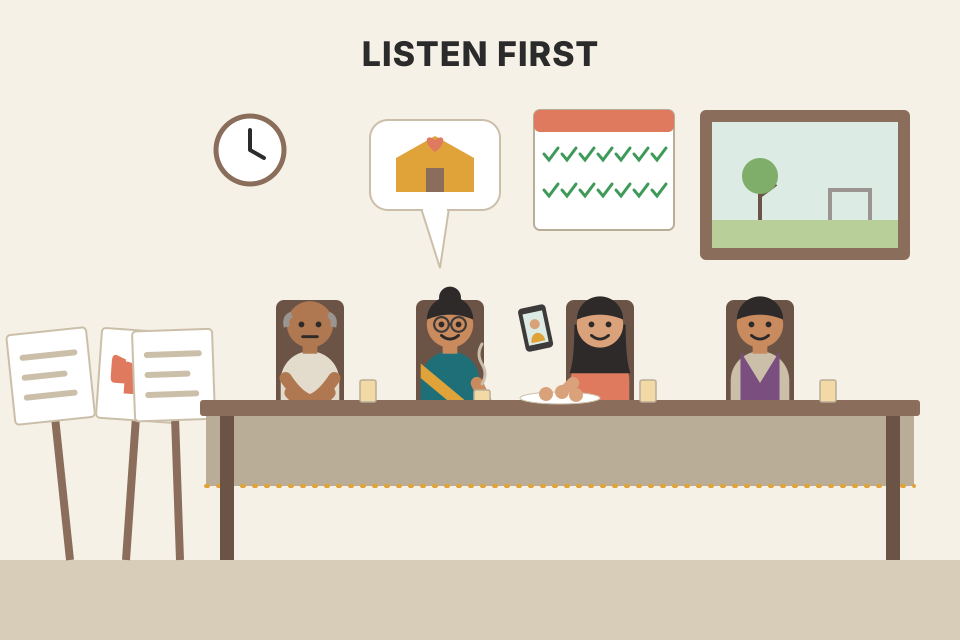
A new principal takes over a school where the teachers have been on a bitter protest over pay and the last principal's insults. Instead of calling a staff meeting on day one, she spends two weeks sitting in on classes, drinking chai in the staff room, and asking teachers about their own children. When she finally holds the meeting, she starts by saying she is grateful to be invited into their school. The teachers came ready to fight; they leave willing to listen.
Where it breaks: the principal has a pay grade to offer or not; the warmth does not change the budget. Rockefeller's story, as the book tells it, makes the friendliness look like it replaced the money question entirely. In real disputes the substance still has to be dealt with (see the Beyond the book note below).
What's happening behind it
The book's explanation: the groundwork changed who Rockefeller was to the miners. A stranger and an enemy became someone who had sat in their kitchens. People who feel they are talking to a friend hear facts as information; people talking to an enemy hear the same facts as attacks.
Beyond the book: two well-studied effects are at work. Mere exposure (Robert Zajonc, 1968): we tend to like people and things more simply because they have become familiar. And contact (Gordon Allport, 1954): hostility between groups drops when members meet personally, as equals, around a shared goal. Rockefeller's visits created exactly that kind of personal contact before the formal meeting.
Beyond the book: the history is more complicated
The violence Carnegie mentions includes what historians call the Ludlow Massacre (April 1914), when Colorado militia attacked a strikers' tent camp and about two dozen people, including women and children, died.
Most histories record that the strike itself had been called off by the union in late 1914, so the 1915 speech came after the miners had lost it. Rockefeller's tour (advised by the labour expert and future Canadian prime minister W. L. Mackenzie King) introduced a company "employee representation plan", which critics saw as a way to avoid recognising the union.
So read the story as proof of what a friendly opening did to the relationship and Rockefeller's reputation, not as proof that friendliness made the pay demand disappear on its own.
At work
You are taking over a team after a bruising reorg or a bad incident, and people are angry at "management". Don't open with an all-hands and a slide of new processes. Do Rockefeller's groundwork first: a short 1:1 with each person, asking what has been hard and what they want to keep. Then, at the team meeting, open with what you learned from them and the goals you share. The plan you present may be exactly the one you would have presented on day one; it will be heard very differently.
Interview angle. "Tell me about a time you joined or inherited a team that was in a bad state." Strong answers describe listening before announcing: the 1:1s, the specific concerns you heard, and how you opened the first group conversation, then the change you made.
Connects to
Being genuinely interested in people before you need them: Ch.4.
Lincoln's drop of honey: win the heart, and the road to reason opens
pdf p149
From Rockefeller, Carnegie draws the chapter's central claim, in three steps:
Logic cannot reach a resentful heart. If someone is full of bad feeling toward you, all the logic in the world will not bring them to your view.
People do not want to change their minds, and cannot be forced or driven to agree. He names the usual offenders: scolding parents, bossy managers, and domineering or nagging spouses.
But they can sometimes be led, if you are gentle and friendly, and he stresses it twice: very gentle and very friendly.
Lincoln said it a century earlier. Carnegie quotes him in full; in short, Lincoln's argument runs like this. There is an old, true saying about honey and gall. It applies to people too: if you want to win someone to your cause, first convince them that you are sincerely their friend. That conviction is the drop of honey that catches their heart, and the heart, whatever we may say, is the main road to their reason.
"A drop of honey catches more flies than a gallon of gall."The old maxim Lincoln quoted (pdf p149)
Dated wording. The book's list of offenders is "scolding parents and domineering bosses and husbands and nagging wives", and it says logic "in Christendom". Today we would say: parents who scold, managers who dominate, and partners of any gender who nag; and "all the logic in the world".
Picture it
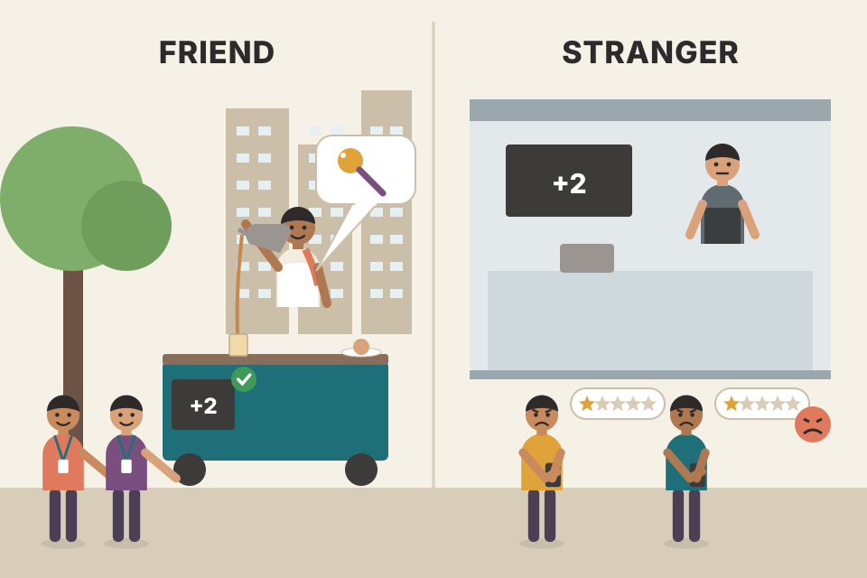
A chai-wallah near a Bengaluru tech park knows his regulars. He remembers who takes it without sugar, asks about the new baby, and gives a free biscuit on exam day. When he starts charging two rupees more, nobody argues; when the chain café nearby raises its price, people write angry reviews. The friendship came first, and the price was received through it.
Where it breaks: the chai-wallah built that goodwill over years without any plan to raise prices. Lincoln's word is sincere: honey poured on just before a demand tastes like a trick, and people notice.
What's happening behind it
The book's explanation (Lincoln's): people judge an argument partly by who is making it. Convince them you are on their side, and they lower their defences enough to actually weigh your reasons.
Beyond the book: persuasion research backs the order Lincoln describes. In the elaboration likelihood model (Petty and Cacioppo, 1980s), a listener who feels threatened processes a message defensively, hunting for flaws, while a listener who likes and trusts the speaker gives it a fair hearing. Studies of liking as a persuasion factor (Cialdini) find that people say yes far more to those they like.
At work
You need a senior engineer from another team to change their service's API for your project. If your first contact is a ticket titled "Your API is blocking us", you are firing logic at a closed road. If you have already helped them once, thanked them in public for a past fix, or simply had a friendly chat at their desk, the same request lands on an open road.
The honey has to be real. A manager who is warm only the week before appraisals is quickly seen through; one who is steadily friendly gets heard when the hard conversation comes.
Lincoln's earlier lesson about sharp words: Ch.1 (the near-duel and the unsent letter).
04 · FRIENDLINESS IN A STRIKE
Robert F. Black buys his strikers baseball bats
pdf p149
Carnegie says business leaders had learned that being friendly to strikers pays, and gives a second labour story, this one without bloodshed.
White Motor Company · Cleveland2,500 employees on strikedemands: higher pay + a union shopsettled within a week
The situation. 2,500 workers at the White Motor Company's plant walked out, demanding higher wages and a union shop (a workplace where every worker must join the union). The company's president was Robert F. Black.
What he did not do. He did not lose his temper, condemn the strikers, make threats, or call them tyrants and Communists, which was the standard language of the time.
What he did instead.
He praised them: he placed an advertisement in the Cleveland newspapers complimenting the strikers on how peacefully they had put down their tools.
Seeing the pickets standing around with nothing to do, he bought them a couple of dozen baseball bats and gloves and invited them to play on empty lots.
For those who preferred bowling, he rented a bowling alley.
What came back. Friendliness, Carnegie says, did what it always does: it produced friendliness. The strikers borrowed brooms, shovels and rubbish carts and cleaned up the matches, papers and cigarette and cigar butts around the factory. Strikers tidying the grounds of the plant they were striking against, in the middle of a fight over wages and union recognition: Carnegie says nothing like it had been heard of in the long, violent history of American labour disputes.
The outcome. The strike ended in a compromise settlement within a week, with no lasting ill feeling or bitterness.
Notice: Black did not give in to the demands by being friendly. There was still a negotiation and a compromise. What the friendliness changed was the temperature: a short dispute between people who still respected each other, instead of a long war.
Picture it
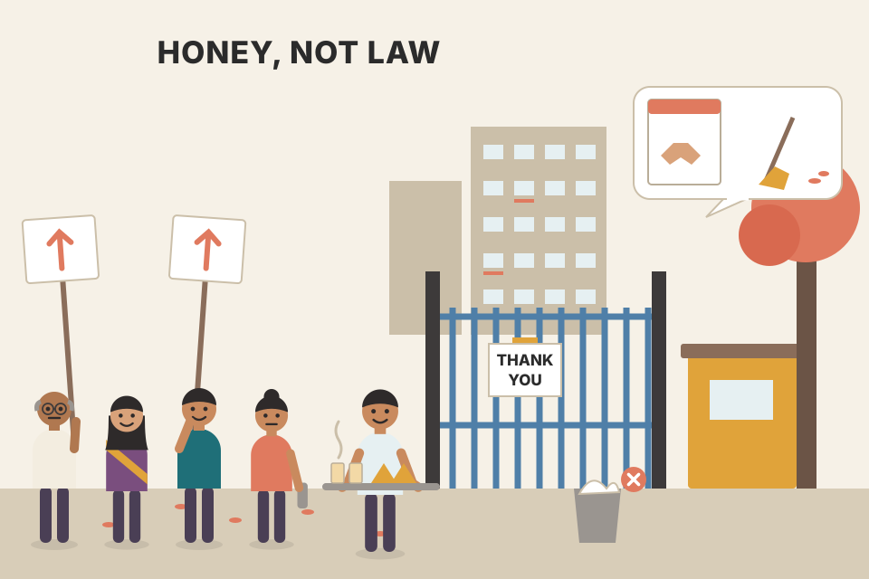
The residents' association of a Pune housing society is protesting a maintenance-fee hike with placards at the gate. The secretary, instead of sending a stiff legal notice, puts up a note thanking them for keeping the protest calm and sends tea and samosas down to the gate. Next morning, the protesters sweep the leaves they had trampled. The fee is settled at a middle figure at the weekend meeting.
Where it breaks: a samosa cannot fix an unfair fee. If the hike really is unjust, friendliness without movement on the substance will soon feel like being bought off. Black still compromised.
What's happening behind it
The book's explanation: "friendliness begets friendliness". Black's praise and gifts invited the strikers to return the gesture, and they did, by caring for the factory. Once both sides were treating each other decently, a compromise became easy to reach.
Beyond the book: negotiation researchers describe this as breaking a conflict spiral. Each hostile act normally invites a harsher one back. A visible, low-cost, unilateral friendly gesture can reverse the spiral; Charles Osgood called a deliberate version of this GRIT (graduated reciprocation in tension-reduction, 1962), proposed for Cold War diplomacy.
At work
Your team pushes back hard on a decision, say a move to a new on-call rotation, and people are openly unhappy in the channel. The "condemn and threaten" response is "This has been decided; please stop relitigating it." Black's response is to thank them in public for raising it openly rather than complaining behind closed doors, and to give them something real to do with the energy: a working session to design the rotation's rules. You will probably still end up with a compromise, and it will come fast and without grudges.
Interview angle. "Describe a time your team disagreed with a decision." Show that you treated the pushback as legitimate, acknowledged how it was raised, and channelled it into shaping the outcome, and give the result (a changed plan, a compromise, people staying engaged).
Daniel Webster: the most powerful arguments, opened softly
pdf p150
Daniel Webster, the nineteenth-century American lawyer and statesman, was one of the most successful advocates ever to argue a case. Carnegie describes him as looking like a god and speaking like Jehovah, a man who could easily have overwhelmed a jury. Yet he introduced his strongest points with gentle, inviting lines, such as:
putting the decision in the jury's hands ("It will be for the jury to consider…");
offering a point as something that might perhaps deserve some thought;
presenting facts he hoped the jury would not lose sight of;
crediting the jury's own good sense: with their knowledge of human nature, they would easily see what the facts meant.
What he avoided: bulldozing, high-pressure tactics, any attempt to force his opinion on the listeners. The quiet, friendly approach was part of what made him famous.
The force version
"It is obvious that the defendant is lying. Anyone can see it."
The jury's pride is challenged: they must now defend their independence by doubting you.
The Webster version
"You, who know how people behave, will judge for yourselves what these three facts suggest."
The conclusion is left for them to reach, so it feels like theirs. (Both lines are our illustrations.)
Rewrite it, Webster style
Pick a blunt message, think about how you would soften the opening without hiding the point, then reveal a Carnegie-style version and what changed.
Picture it
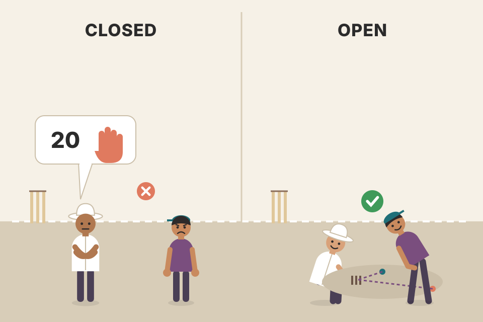
A senior umpire at a local cricket tournament is asked by the team captain to explain a disputed run-out. One umpire says, "I've been doing this twenty years; it was out." Another says, "You were watching from the boundary, so you'll know the angle was tight. Here's what I saw from square leg." The second explanation persuades even the captain who lost.
Where it breaks: the umpire's decision stands either way, while Webster's jury actually had the power to decide. Soft openings work best when the listener really does have a choice; when they don't, say so plainly and use the softness only for respect.
What's happening behind it
The book's explanation: pressure invites resistance; an invitation invites thought. Webster's openers treat listeners as intelligent judges, which flatters their sense of importance and leaves room for them to arrive at his conclusion themselves.
Beyond the book: this matches psychological reactance (Jack Brehm, 1966): when people feel their freedom to decide is being taken away, they push back, sometimes adopting the opposite view just to keep it. Language that preserves choice ("you may want to consider…", "you are free to decide") has been found in a number of studies to raise compliance; a well-known example is the "but you are free" technique (Guéguen and Pascual, 2000).
At work
In a design review, the force version is "This design is wrong; we should use a queue." The Webster version is "One thing that may be worth thinking about: what happens to these writes if the downstream service is slow for ten minutes? You know the traffic pattern better than I do." The concern is exactly as sharp. The difference is that the author gets to discover the problem, which makes it far more likely they will fix it willingly.
Watch the line between soft and vague. Webster's openers led straight into hard facts. "Maybe, possibly, just a thought…" with no fact attached is not Webster; it is mumbling.
Connects to
Never telling people flatly they are wrong: Ch.11.
O. L. Straub charms a hard-boiled landlord into cutting his rent
pdf p150–151
Carnegie now brings the principle down to everyday life: you may never settle a strike or face a jury, but you might want your rent reduced. Will a friendly approach help there?
O. L. Straub, an engineera landlord known as hard to deal withother tenants had tried and failed
The situation. Straub wanted to pay less rent. Everyone told him the landlord was tough, and other tenants had already tried and been turned down. Straub wrote to the landlord saying he would move out when his lease ended. The truth was that he did not want to move; he wanted to stay at a lower rent. He decided to treat it as a test of the course he was taking.
The move. The landlord came round with his secretary as soon as the letter arrived. Straub met him at the door with a warm welcome, full of goodwill. He did not start with how high the rent was. He started with how much he liked the building, praised generously the way the landlord ran it (Straub used Charles Schwab's phrase from Ch.2, being "hearty in approbation and lavish in praise"), and only then said he would love to stay another year but could not afford it.
The landlord's reaction. He had plainly never been received like this by a tenant and did not know what to make of it. Then he began to pour out his own troubles: one tenant had sent him fourteen letters, some downright insulting; another threatened to break his lease unless the landlord stopped the man upstairs from snoring. What a relief, he said, to have a tenant who was happy.
The result. Without being asked, the landlord offered a small reduction. Straub wanted more, so he named the figure he could afford, and the landlord agreed on the spot. As he left he even asked what redecorating he could do for Straub.
Straub's own conclusion. Had he used the other tenants' methods, he was sure he would have failed as they did. The friendly, sympathetic, appreciative approach won.
Step through the story
Worked example: asking your landlord in Bengaluru
The way the other tenants did it
"The rent is way above market. Flats in this lane are going for ₹5,000 less. Either you reduce it or I'm leaving."
The owner hears a threat and a complaint, the same as from every other tenant. He digs in to prove he is not a pushover.
The Straub way
"Uncle, I've really liked living here: the building is always clean and you fix things fast, which isn't common. I'd love to stay another year. Honestly, the current rent is stretching me. Is there any way we can work something out?"
The praise is true, the problem is stated plainly, and the owner is invited to be generous instead of being forced to defend himself. (Figures modelled.)
Picture it
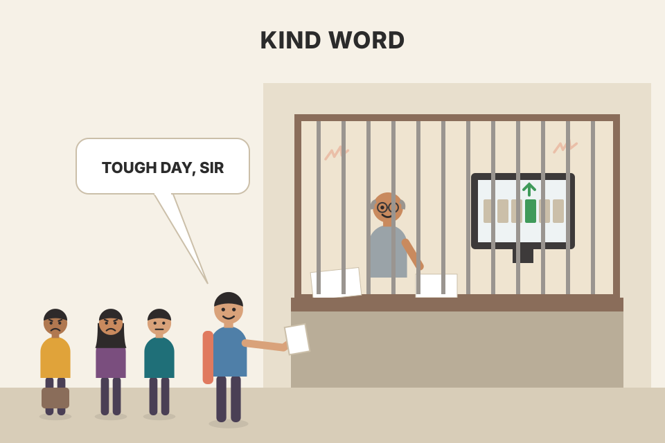
At a crowded Mumbai railway booking counter, the clerk has been shouted at all morning. The next passenger says, "You've had a tough queue today, sir. I need to change a Tatkal ticket, I know it's a pain." The clerk sighs, smiles, and finds him a better berth than the one he asked for.
Where it breaks: the clerk has small favours to give; a system with a fixed rule cannot bend however nice you are. Straub's landlord could set his own price, which is why warmth translated directly into money.
What's happening behind it
The book's explanation: the landlord was used to hostility, so he arrived braced for it. Straub's warm reception disarmed him, his honest praise met a real hunger for appreciation (the landlord had been getting insulting letters), and a man who feels appreciated wants to keep the appreciative tenant.
Beyond the book: two things stand out. First, contrast: after a run of hostile tenants, a pleasant one feels unusually valuable. Second, by letting the landlord talk about his troubles, Straub became someone the landlord confided in, and people make concessions to people they feel close to. Note also the small negotiation detail: Straub did not accept the first offer; he named his number, politely. Friendly is not the same as passive.
At work
Straub's sequence fits a salary conversation, a request for more headcount, or asking a client for a deadline extension: (1) open with what you genuinely value about the relationship, (2) state your real constraint honestly, (3) let the other person talk and respond, (4) when an offer comes, name your figure calmly.
Interview angle. "Tell me about a negotiation you were part of." Describe how you built goodwill before the ask, stated your position honestly, listened to the other side's pressures, and still held to a clear figure or outcome.
One honesty note. Straub's letter said he was moving out when he actually wanted to stay. Carnegie passes over this. The friendly opening is what the chapter credits; you do not need the bluff, and at work a bluff that is discovered destroys exactly the trust this chapter is about.
Letting the other person talk about their troubles: Ch.7 and Ch.15.
07 · A HOSTILE STRANGER
Dean Woodcock and the man with the camera
pdf p151–152
Dean Woodcock · Pittsburghsuperintendent at the local electric companya two-person job, dozens watching
The situation. Woodcock's department was asked to repair equipment at the top of a utility pole. This work had recently been moved to his section from another department; his people were trained for it but had never actually done it. Everyone was curious whether they could manage, so Woodcock, several of his managers and people from other departments all came to watch. There were many cars and trucks, and a crowd standing around looking up at the two men on the pole.
The threat. Woodcock noticed a man up the street get out of his car with a camera and start photographing the scene. Utility companies are very sensitive about public image, and Woodcock suddenly saw it through the stranger's lens: dozens of people turned out for a two-person job, a picture of waste.
The conversation. He walked over and remarked, pleasantly, that the man seemed interested in the work. The photographer answered with hostility: his mother owned shares in the company, these photos would be an eye-opener for her and might convince her the investment was a mistake; he had been telling her for years these companies were full of wasted effort, and here was proof. The newspapers might like the pictures too.
Woodcock's reply. He agreed first: it does look that way, and he would think the same in the man's place. Then he explained that this was a special case: the first job of its kind for his department, which was why everyone from executives down had come to watch, and that normally two people would do it.
The result. The photographer put his camera away, shook Woodcock's hand and thanked him for taking the time to explain. Woodcock's friendly approach saved the company a lot of embarrassment and bad publicity.
"It does look like it, doesn't it?"Dean Woodcock to the photographer (pdf p151)
Why this one is different from the others: Woodcock did not choose the moment. The other person arrived hostile, with a threat. He still began friendly, and his first sentence agreed with the stranger's view before correcting it.
Which opening? (Woodcock's test)
Pick a response to see how Carnegie would judge it.
Picture it
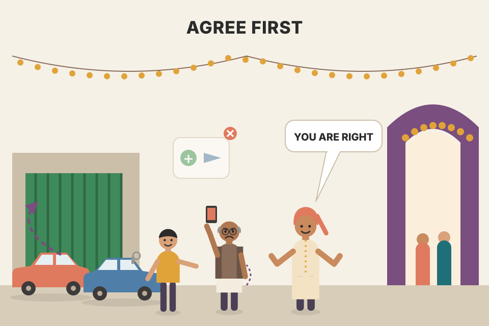
Outside a Delhi wedding hall, a neighbour films the guests' cars blocking his gate and says he will post it on the colony WhatsApp group. The bride's uncle could argue about parking rules. Instead he says, "You're right, it looks terrible from your side, I'd be furious too. It's just tonight; let me get the two cars at your gate moved right now." The phone goes back in the pocket.
Where it breaks: Woodcock's explanation was true: it really was a one-off. If the waste had been real, "it does look like it" followed by a cover story would have been spin, and a photographer who later found out would have a much better story.
What's happening behind it
The book's explanation: the friendly opening (a pleasant remark about the man's interest in the work) and the immediate agreement (he would think the same in the man's place) took away the fight the man was expecting. With nothing to push against, he was willing to hear the explanation.
Beyond the book: crisis-communication and hostage-negotiation trainers teach the same opening: acknowledge how the situation looks to the other person before giving your side. Chris Voss (a former FBI negotiator) calls naming the other side's view "labelling" and describes it as one of the quickest ways to lower someone's guard; customer-service training calls it "acknowledge, then explain".
At work
This is the public-channel moment. A senior stakeholder posts in a big Slack channel: "Why do we have six engineers in a war room for a one-line config fix? Looks like waste." Defending the team instantly ("That's not fair, you don't understand the context") turns it into a public fight. Woodcock's reply: "Fair, from the outside it does look like overkill. It's the first failover drill on the new cluster, so the whole team is watching to learn it. Normally it's one on-call engineer. Happy to share the write-up."
Interview angle. "Tell me about a time you dealt with a difficult customer or stakeholder." Start with how you acknowledged their point of view, then the facts you gave, then the outcome. Interviewers listen for whether you got defensive.
Connects to
Saying "you may be right" before disagreeing: Ch.11.
Seeing it from the other person's point of view: Ch.17.
08 · A DAMAGE CLAIM
Gerald Winn's flooded basement: the 25-mile drive where he chose calm
pdf p152
Gerald H. Winn · Littleton, New Hampshirerepairs over $2,000no insurance cover25-mile drive
What happened. Early one spring, before the frozen ground had thawed, there was an unusually heavy rainstorm. The water that would normally have drained into the roadside ditches and storm drains took a new course, onto the plot where Winn had just built a new house. With nowhere to go, it built up pressure around the foundation, forced its way under the concrete basement floor and burst it open. The basement flooded, ruining the furnace and the water heater. Repairs cost more than two thousand dollars, and his insurance did not cover this kind of damage.
Whose fault. Winn soon learned that the developer of the subdivision had failed to put in a storm drain near the house, which would have prevented the whole thing. He was clearly in the right.
The choice. He made an appointment with the developer. On the twenty-five-mile drive to the office he went over the situation and, remembering the course, decided that showing his anger would achieve nothing worthwhile.
The opening. He arrived calm and began by chatting about the developer's recent holiday in the West Indies. Only when the moment felt right did he bring up the "little" problem of water damage.
The result. The developer quickly agreed to do his share. A few days later he called back: he would pay for all the damage and also install a storm drain so it could not happen again.
Winn's conclusion. Even though the fault was entirely the developer's, without a friendly start it would have been very hard to get him to accept full responsibility.
The lesson that's easy to miss: being right is exactly when people feel most entitled to be angry, and exactly when anger costs the most. Winn had the facts on his side; the friendly opening is what turned the facts into a cheque.
Reflect, then reveal: plan your 25-mile drive
Think of a complaint you need to raise this month with someone who is (at least partly) at fault: a vendor, a contractor, another team, a landlord. Write the first two or three sentences you would normally say. Nothing is saved or sent anywhere.
Picture it
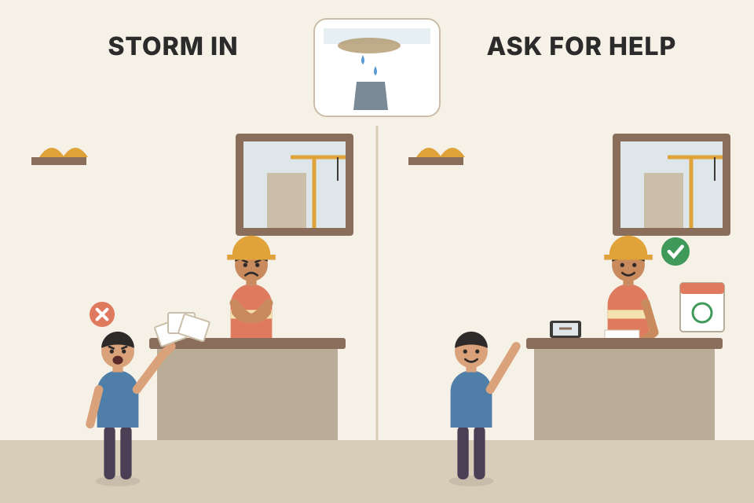
Your new flat's bathroom ceiling leaks after the first monsoon week, and it is clearly the builder's waterproofing. You could storm into the site office in Gurugram waving photos. Or you could ask the site engineer how the new tower is coming along, mention you like how the lobby turned out, and then say, "There's one small thing I need your help with." The second visit is far more likely to end with the builder's team at your door the same week.
Where it breaks: calling a ₹50,000 leak (figure modelled) a "small thing" is a softening word, not a lie, as long as you then show the full damage. If you downplay it so much that they think it is trivial, you will be offered a trivial fix.
What's happening behind it
The book's explanation: anger would have put the developer on the defensive, and a defensive person argues about liability. Relaxed by friendly talk about his own holiday, he could look at the problem as something to fix, and once he had agreed to do his share, accepting all of it was a short step.
Beyond the book: negotiation research finds that the mood at the start of a negotiation carries through it. Studies of anger in negotiations (for example by Keith Allred and colleagues, 1997) found angry negotiators were less willing to work together and reached worse joint outcomes. The "foot in the door" effect (Freedman and Fraser, 1966) also fits: agreeing to a small step ("do his share") makes the bigger step (paying everything) easier.
At work
A cloud vendor's outage cost your company a day of a data pipeline. You have a clear SLA breach. The angry escalation ("Your outage violated our SLA; we expect full credits") gets you a support script and a lawyer. The Winn approach: get on a call with your account manager, ask about their week and the new region they launched, then: "We were hit hard by Tuesday's incident, and I'd like your help working out what's fair and how we avoid it next time." You are more likely to get the credits and an engineer who looks into your setup.
Connects to
Talking in terms of the other person's interests (his holiday): Ch.8.
The sun and the wind: which one gets the coat off?
pdf p153
Carnegie remembers reading this fable as a barefoot boy walking through the woods to a country school in north-west Missouri.
The bet. The sun and the wind argued about which was stronger. The wind pointed at an old man in a coat and bet he could get the coat off faster than the sun could.
The wind's turn. The sun went behind a cloud and the wind blew, harder and harder, until it was nearly a tornado. But the harder it blew, the tighter the old man held his coat around him. Eventually the wind died down and gave up.
The sun's turn. The sun came out from behind the cloud and simply shone warmly on the old man. Before long he wiped his forehead and took the coat off himself.
The moral. The sun told the wind that gentleness and friendliness are always stronger than fury and force.
Picture it
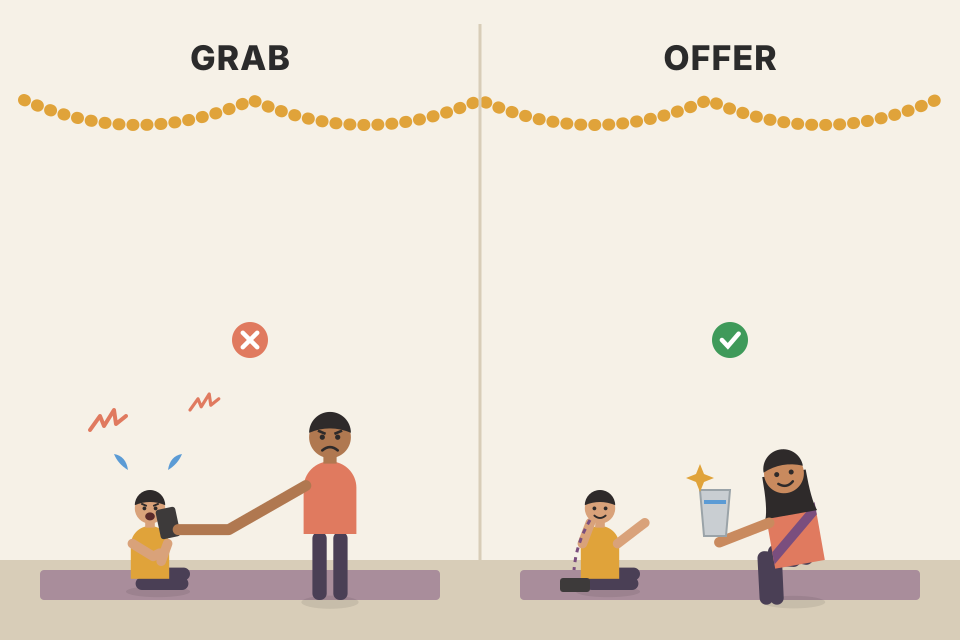
A toddler at a family function refuses to let go of a phone. Grab it, and the little fist clamps tighter and the screaming starts. Kneel down, smile, and show the shiny steel tumbler with water in it, and the phone is dropped in a second for the more interesting thing.
Where it breaks: the toddler is simply distracted; adults notice when you are trying to distract them. With adults the warmth has to be real and the request still has to be made, as in every story in this chapter.
What's happening behind it
The book's explanation: force creates resistance in proportion to the force. Warmth removes the reason to resist, so people do of their own accord what force could not make them do.
Beyond the book: the fable is a neat picture of reactance (see plate 5): pressure is felt as a threat to freedom, and people defend their freedom by gripping harder. The sun changes the conditions so that taking the coat off becomes the man's own choice, which psychologists would say makes the change both easier and more lasting.
At work
The wind is the escalation ladder used too early: a manager CC'd, a "per my last email", an all-caps "URGENT". Each gust makes the other person hold their position tighter. The sun is making the change you want comfortable for them: a draft they can edit rather than a spec to obey, a pairing offer, an explicit "no pressure if this week is bad". Use the wind only when the sun has truly failed, and know that it costs goodwill.
When nothing else works, a challenge (a different kind of push): Ch.21.
10 · A CUSTOMER COMPLAINT
F. Gale Connor skips the service desk and compliments the owner
pdf p153
Carnegie says people prove the honey-and-gall saying every day, and gives one more class member's story.
F. Gale Connor · Lutherville, Marylanda four-month-old carthird visit to the service department
The situation. Connor had to take his car, only four months old, back to the dealer's service department for the third time. He could see that talking to, reasoning with or shouting at the service manager was not going to solve anything.
The move. He walked over to the showroom and asked to see the owner of the dealership, Mr. White. After a short wait he was shown into the office. He introduced himself and explained that he had bought the car there because friends who had dealt with White recommended him: they had told him the prices were very competitive and the service outstanding. White smiled with satisfaction as he listened.
Then the problem. Only then did Connor describe the trouble he was having with the service department, adding that he thought White would want to know about anything that might damage his fine reputation.
The result. White thanked him for bringing it to his attention and promised the problem would be fixed. He got personally involved, and he also lent Connor his own car while Connor's was being repaired.
Worked example: the same complaint, two openings
Gallon of gall
"This is the third time I'm back. Your service department is incompetent and I want to speak to someone who can actually fix my car."
The owner's first instinct is to defend his staff. The conversation becomes about whether they are incompetent.
Drop of honey (Connor's order)
"I bought from you because friends said your prices and service were the best around. I thought you'd want to know that this is my third visit for the same fault, because it isn't matching that reputation."
The owner hears praise of his business and an ally protecting it. Fixing the car becomes his way of living up to the reputation.
Picture it
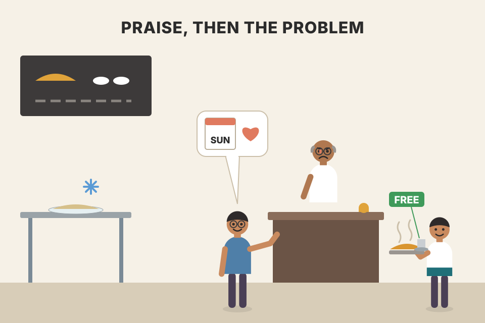
Your favourite South Indian restaurant in Hyderabad serves you a cold dosa for the second visit running. Instead of snapping at the waiter, you catch the owner at the counter: "We come here every Sunday because your dosas are the best in the area. Today's came out cold, and I thought you'd want to know." The next dosa arrives hot, with a free filter coffee and the owner's personal attention every visit after.
Where it breaks: going over someone's head has a cost. The waiter or service manager may feel exposed. Connor's move works because the owner really is the person who cares about the reputation, but used every time, it can look like you never give the front line a fair chance.
What's happening behind it
The book's explanation: Connor appealed to what the owner already valued, his reputation, and opened by confirming it. A complaint framed as "helping you protect your good name" makes the listener want to act; a complaint framed as an accusation makes them want to defend.
Beyond the book: this is close to what Cialdini calls commitment and consistency: once someone has been reminded of a good image of themselves ("outstanding service"), they feel pressure to act in line with it. Carnegie gives this a full chapter later: give people a fine reputation to live up to.
At work
A shared platform team keeps breaking your builds, and tickets in their queue go nowhere. Rather than an angry post about the platform team, talk to their lead: "We moved to your CI templates because they were the most reliable in the company, and they mostly still are. I thought you'd want to know we've hit the same breakage three times this month, because it's starting to undercut that." You have raised the problem, given them a reason to care, and stayed on good terms with the team you depend on.
Interview angle. "Tell me about a time you escalated an issue." Show that you tried the normal route, escalated to the person who owned the outcome, framed it around their goals, and kept the relationship with the first team intact.
Aesop's 2,600-year-old lesson: begin in a friendly way
pdf p154
The source of the fable. Carnegie reminds us that Aesop was a Greek slave who lived at the court of King Croesus and told his famous fables about six hundred years before Christ. Yet what he taught about human nature, Carnegie says, is as true in Boston and Birmingham today as it was twenty-six centuries ago in Athens.
The chapter in one sentence. The sun gets your coat off faster than the wind, and in the same way kindness, a friendly approach and appreciation change people's minds more easily than all the bluster and storming in the world. He closes by repeating Lincoln's line about honey and gall.
Principle 4 of Part Three
Begin in a friendly way.
What "begin in a friendly way" meant in each story (the opening move came before the issue every time):
Who
Friendly opening
Then the issue
Outcome
Rockefeller Jr.
weeks of visits; meeting as friends, there by their courtesy
the company's facts
strikers back at work (book's account)
Robert F. Black
newspaper praise, bats, gloves, bowling
wage and union-shop talks
compromise in a week, no rancour
Daniel Webster
gentle openers, trust in the jury's good sense
his strongest arguments
famous success as an advocate
O. L. Straub
warm welcome, praise of the building
can't afford the rent
rent cut to his figure, offer to redecorate
Dean Woodcock
a pleasant remark; agreeing it looked wasteful
first job of its kind
camera away, handshake, no bad press
Gerald Winn
calm; chat about the West Indies trip
the "little" water damage
over $2,000 paid in full + a storm drain
F. Gale Connor
praise of prices, service, reputation
third service visit
owner fixes it, lends his own car
Self-audit: this week, when I had something hard to say, did I…
Picture it
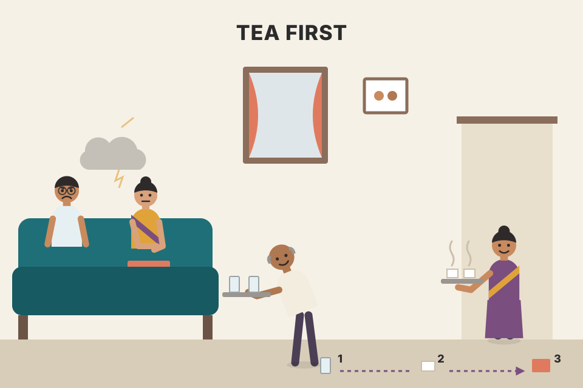
In many Indian homes, a guest is offered water and tea before anyone asks why they have come, even if they have come to settle a quarrel. The ritual is a built-in "begin in a friendly way": by the time the hard topic comes up, everyone has already shared something warm.
Where it breaks: a ritual can become automatic and empty. The tea counts only if the warmth behind it is real; a host who serves tea with a cold face has still begun with gall.
What's happening behind it
The book's explanation: human nature has not changed since Aesop. Pressure makes people resist; kindness, friendliness and appreciation make them open to change.
Beyond the book: the claim that it is universal holds up well in modern research on first impressions (judgements of warmth are formed within seconds and colour what follows) and on emotional contagion (moods spread between people in conversation). Where cultures differ is in how friendliness is shown, not whether it works.
At work
A simple default for any hard message, whether a code review, a missed deadline, or a client escalation: one honest warm sentence, then the issue in plain words, then a question or a request. Not a "compliment sandwich" with praise hiding the point; a warm door opening onto a clear point.
Interview angle. Many behavioural questions ("difficult stakeholder", "conflict", "negotiation", "angry customer") are testing whether you can stay friendly under pressure. Tell the story so the interviewer hears your opening line, and make it a friendly one.
Venting pleases only you. A hostile tone makes it harder, not easier, for the other person to agree. Wilson: come with clenched fists and theirs clench as fast; sit down to find exactly where and why you differ, and the differences turn out to be few.
Rockefeller Jr. (Colorado, 1915) faced miners after a long, bloody strike. He spent weeks visiting camps and homes, then opened his speech as a friend (meeting as friends, not strangers, and there only by their courtesy). In Carnegie's account the strikers returned to work without pressing the wage demand. Arguing and proving them wrong would have brought more hatred.
A resentful heart ignores logic. People can't be forced or driven to agree, but they can be led, gently. Lincoln: first convince them you are their sincere friend; that drop of honey wins the heart, the main road to reason.
Robert F. Black praised 2,500 White Motor strikers in the Cleveland papers, gave them bats, gloves and a bowling alley; they cleaned the factory grounds, and the strike ended in a week in compromise without rancour.
Daniel Webster opened his strongest arguments softly (offering points for the jury to weigh, trusting their judgement), never bulldozing.
Everyday proof: Straub praised his landlord's building and got his rent cut to his own figure; Woodcock agreed with a hostile photographer that the scene looked wasteful, explained, and avoided bad press; Winn chatted about the developer's holiday and got over $2,000 of damage paid in full plus a storm drain; Connor praised a dealer's reputation and got his car fixed and a loaner.
The sun and the wind (Aesop, about 600 BC): force makes people grip their position; warmth makes them let go by choice.
Principle 4 of Part Three: Begin in a friendly way. In every story the issue was still raised, after the friendly start.
Term or phrase
Meaning on this page
Where
Principle 4 (Part Three)
Begin in a friendly way.
pdf p154
Fists doubled
Wilson's image: hostility is returned just as fast.
pdf p147
Take counsel together
Sit down and find exactly where and why you differ.
pdf p147
Making friends out of enemies
Rockefeller's groundwork plus a warm opening.
pdf p147–148
Led, not driven
People can't be forced to agree; gentleness can lead them.
pdf p149
A drop of honey / a gallon of gall
A little sweetness wins more than a lot of bitterness (Lincoln's maxim).
pdf p149, p154
The high road to reason
Lincoln: the heart is the way to a person's reason.
pdf p149
Friendliness begets friendliness
Black's gestures were returned by the strikers.
pdf p149
Soft openers
Webster's way of introducing strong arguments gently.
pdf p150
Sun and wind
Aesop's fable: warmth beats force.
pdf p153–154
13 · USE IT
Practice this week
beyond the book
Small exercises, each with a way to tell whether it worked. The exercises are ours; the ideas are the chapter's.
The first-sentence rule. For every hard message this week (PR comment, Slack, email), check the first sentence before sending: is it about the other person or about the problem? Make it one honest, warm line. Worked if: replies come back about the issue, not as a defence.
The 25-mile drive. Before one complaint you need to make, decide in advance, in writing, "anger will not help here", and write the opening two sentences. Worked if: the other person offers part of the fix before you demand it.
The Woodcock reply. The next time someone comes at you hostile, make your first words agree with how it looks from their side ("I'd think the same in your place"), then explain. Worked if: their tone drops within two exchanges.
Rockefeller groundwork. Pick one person you will need something from next month (another team's lead, a client contact). Have one friendly, no-ask conversation with them this week. Worked if: when the ask comes, it feels like a favour between colleagues rather than a ticket.
Webster's openers. In one design review or meeting, introduce your main objection with "One thing that may be worth thinking about…" followed by the concrete fact. Worked if: the author starts working on the problem instead of defending the design.
At home. Raise one recurring irritation (dishes, noise, plans) after a warm moment instead of in the middle of one. Worked if: it is settled without a raised voice.
14 · LIMITS
Where it can go wrong
pdf p147–154 · plus beyond the book
The book's own caveats and hints first.
Sincerity is part of the rule. Lincoln's version is to convince people you are their sincere friend. Rockefeller did weeks of real visits; Straub's and Connor's praise was true. The chapter is not about acting friendly for five seconds before an attack.
"Led", not "forced", and only "possibly". Carnegie says people may possibly be led if you are gentle. He does not promise it always works.
The problem is still raised. Every story states the issue: the rent, the damage, the service faults, the company's facts. Friendly is the opening, not a replacement for saying what you need.
Friendly is not passive. Straub turned down the landlord's first small offer and named his own figure.
Beyond the book: our critique
The big stories are one-sided. The Rockefeller account comes from the employer's side and leaves out that the strike had largely been lost before the 1915 speech (see plate 2). Black's strike still ended in compromise. Friendliness lowers the temperature; it does not make real conflicts of interest disappear.
Power changes the meaning. When the person with more power is friendly (a CEO to strikers), it can be generous, or it can be a way to avoid conceding anything. When the person with less power must always be friendly, it can turn into swallowing legitimate grievances. Be warm, but do not let warmth become a reason others' complaints are never heard.
The "compliment sandwich" trap. Friendly openings used as a formula (praise, criticism, praise) are quickly recognised, and then every compliment becomes a warning sign. Vary it, and keep the warmth honest.
Softening can hide urgency. Winn calling his damage a "little" problem worked because he then showed the full cost. In an incident or safety issue, an over-soft opening can make people under-react. State severity clearly.
Culture changes the form. In many Indian settings, warmth is shown through hospitality and asking after family, and getting straight to business can feel rude; in some very direct workplaces, a long warm-up feels like stalling. Match the length of the opening to the culture; keep the order (warmth, then issue).
Evidence by anecdote. The chapter argues through success stories, and we never hear about the times the friendly opening failed. The direction is supported by research on reciprocity, reactance and conflict start-ups, but treat the stories as illustrations.
15 · TEST YOURSELF
Check yourself
pdf p147–154
Try to answer before opening each one. The first half is story recall; the second half is using the principle.
1. What does Carnegie say about the pleasure of telling someone off?
That it is real, for you: you enjoy unloading your feelings. But the other person does not share the pleasure, and your combative tone and hostile attitude make it harder for them to agree.
2. What two approaches does Woodrow Wilson contrast?
Coming with fists doubled (the other person's fists double just as fast) versus proposing to sit down and talk it through together, working out why and where you differ. Then you find the differences are few, the agreements many, and with patience, candour and a wish to agree, you will.
3. What did Rockefeller Jr. do before his speech to the Colorado miners, and what did the speech emphasise?
He spent weeks making friends: visiting all the camps in the southern coal field, talking individually with nearly all the representatives, and meeting their families in their homes. The speech called it a red-letter day, said they met as friends rather than strangers, spoke of common interests, and said he was there only by their courtesy.
4. According to the book, what was the outcome, and what would have happened if he had argued?
The hatred subsided, he won admirers, and the strikers went back to work without another word about the wage increase. If he had argued and proved them wrong by logic, Carnegie says, there would have been more anger, more hatred and more revolt.
5. How did Lincoln explain the honey-and-gall saying?
To win someone to your cause, first convince them you are their sincere friend. That is the drop of honey that catches the heart, and the heart is the great high road to their reason.
6. List three things Robert F. Black did during the White Motor strike, and what the strikers did in return.
He placed an ad in the Cleveland papers praising the peaceful way they had laid down their tools, bought a couple of dozen baseball bats and gloves for the idle pickets, and rented a bowling alley. The strikers borrowed brooms, shovels and carts and cleaned up the litter around the factory. The strike ended within a week in a compromise with no ill feeling.
7. How did Daniel Webster introduce his most powerful arguments?
With soft, inviting lines: it will be for the jury to consider, this may perhaps be worth thinking of, here are facts I trust you won't lose sight of, you with your knowledge of human nature will easily see their significance. No bulldozing or high pressure.
8. What did O. L. Straub say first to his landlord, and what did he end up with?
He welcomed him warmly and talked about how much he liked the building and how well it was run, then said he wanted to stay another year but couldn't afford it. The landlord, after sharing complaints about difficult tenants (fourteen letters; a snoring neighbour), offered a cut unasked, accepted Straub's own figure, and offered to redecorate.
9. What were Dean Woodcock's first words to the photographer after the threat, and why did they work?
He agreed: it does look like that, and he'd think the same in the man's position. Then he explained it was the department's first job of this kind, which was why so many were watching, and that normally two people would do it. Agreeing first removed the fight the man expected; he put his camera away and thanked Woodcock.
10. Gerald Winn was clearly in the right. Why did he still start with small talk, and what did he get?
On the 25-mile drive he decided anger would serve no purpose. He opened with the developer's West Indies holiday, then raised the "little" water problem. The developer paid for all the damage (over $2,000, uninsured) and installed a storm drain. Winn believed that without the friendly start, getting full liability accepted would have been very difficult.
11. How did F. Gale Connor frame his complaint to Mr. White?
He said he had bought from White on friends' recommendations about his competitive prices and outstanding service, and then described the service-department problem as something that might tarnish White's fine reputation. White personally got involved and lent Connor his own car.
12. Application: you must tell a teammate their PR breaks the API contract for mobile. Write the first sentence the chapter would suggest.
Something warm and true about them or the work first, e.g. "The new pagination is much cleaner than what we had." Then the issue plainly: "One thing that may be worth a look: the response shape changed, and the mobile app expects the old field names." Then a question or offer: "Want to pair on a compatibility shim?"
13. Application: a client emails angrily, cc'ing your CEO, about a delayed feature. What would Woodcock and Lincoln suggest?
Don't defend first. Acknowledge how it looks from their side ("I understand why this is frustrating, especially with your launch next week"), show you're on their side, then give the facts and a concrete plan. Ideally move to a call; and longer term, build the goodwill (Rockefeller's groundwork) before the next crisis.
14. Is "begin in a friendly way" the same as the compliment sandwich?
No. The chapter's stories open with sincere warmth and then state the issue clearly; nothing is hidden and the praise isn't a formula to sweeten a blow. A mechanical praise-criticism-praise routine is soon recognised and makes people distrust your compliments.
15. Interview: "Tell me about a time you resolved a conflict with another team." How does this chapter shape a good answer?
Show the opening: how you started the conversation (acknowledging their goals, a relationship built before the ask), then how you laid out the specific points of difference, found that most were shared, and reached an outcome. Avoid stories whose turning point is you proving them wrong.
16 · SOURCES
References
pdf p147–154
Book pages and other sources used on this page
Dale Carnegie, How to Win Friends and Influence People, revised edition (1981; Simon & Schuster 2009 printing), Part Three, Chapter 4, "A Drop of Honey", pdf p147–154. Stories by page: venting and Woodrow Wilson p147; Rockefeller Jr. and the Colorado strike p147–149; Lincoln's honey and gall p149; Robert F. Black and White Motor p149; Daniel Webster p150; O. L. Straub p150–151; Dean Woodcock p151–152; Gerald H. Winn p152; the sun and the wind p153; F. Gale Connor p153; Aesop and Principle 4 p154.
Beyond the book (named where used): A. Gouldner, "The norm of reciprocity" (1960); R. Cialdini, Influence (reciprocity, liking, commitment and consistency); J. Gottman on harsh start-up; R. Zajonc, mere exposure (1968); G. Allport, The Nature of Prejudice (1954), contact hypothesis; R. Petty and J. Cacioppo, elaboration likelihood model; J. Brehm, A Theory of Psychological Reactance (1966); N. Guéguen and A. Pascual, "but you are free" (2000); C. Osgood, An Alternative to War or Surrender (1962), GRIT; K. Allred et al. on anger in negotiation (1997); J. Freedman and S. Fraser, foot-in-the-door (1966); C. Voss, Never Split the Difference.
Historical notes (Beyond the book): the Colorado Coalfield War of 1913–14 and the Ludlow Massacre (April 1914); Rockefeller Jr.'s 1915 Colorado tour and employee representation plan, advised by W. L. Mackenzie King.